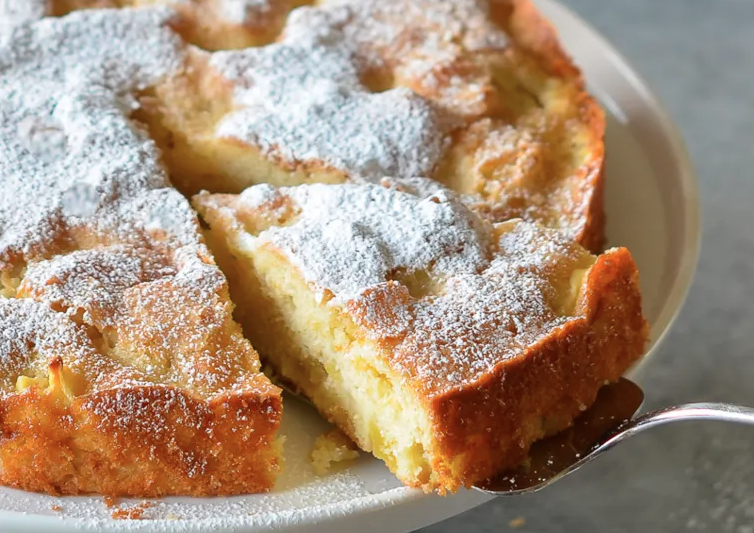

French Apple Cake

This is a recipe for French Apple Cake. This cake is moist and smells wonderful. It's sweet
but not too sweet! It's the perfect recipe to make in a hurry when you have guests coming over for tea!
This recipe was sourced from Once Upon a Chef!
Ingredients:
- 1 teaspoon baking powder
- 1/4 teaspoon salt
- 1/2 cup unsalted butter at room temperature
- 2/3 cup granulated sugar
- 2 large eggs
- 1 teaspoon vanilla extract
- 2 apples, peeled, cored, and cut into 1/2 inch cubes
Steps:
- Preheat the oven to 350°F and set an oven rack in the middle position.
- Grease a 9-inch springform or regular cake pan with butter or nonstick cooking spray.
- In a small bowl, whisk together the flour, baking powder and salt.
- Using a handheld mixer with beaters or a stand mixer with the paddle attachment, cream the butter and granulated sugar until light and fluffy, about 3 minutes.
- Add the eggs, one at a time, beating well and scraping down the sides of the bowl after each addition.
- Beat in the vanilla.
- Add the flour mixture and mix on low speed until just combined.
- Using a rubber spatula, fold in the chopped apples.
- Scrape the batter into the prepared pan and even the top.
- Sprinkle evenly with 1 tablespoon of granulated sugar.
- Bake for about 40 minutes, or until the cake is golden and a toothpick inserted into the center comes out clean.
- Allow the cake to cool on a rack in the pan and once cool remove the cake from the pan.
- Cake can be served warm or room temperature, plain or with lightly sweetened whipped cream or vanilla ice cream.
Home